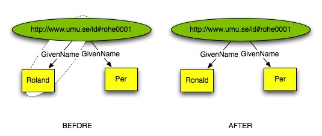
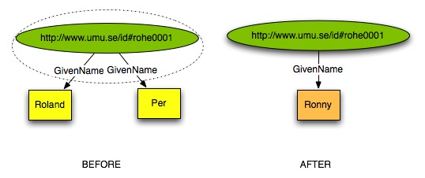
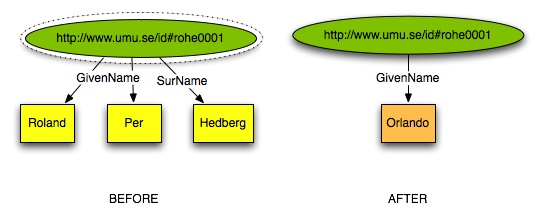
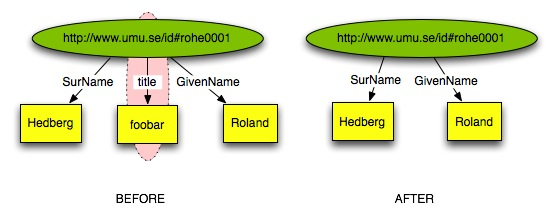
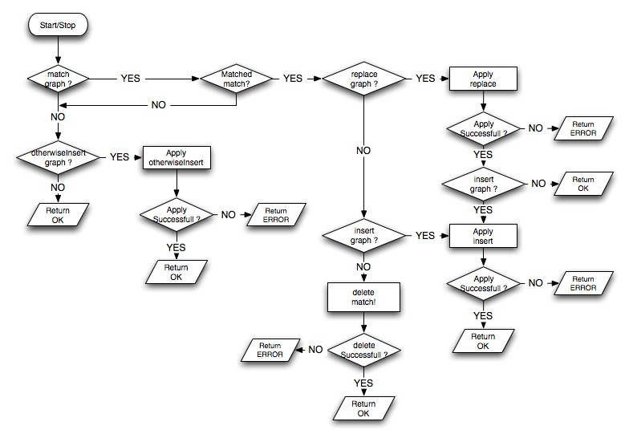

<!DOCTYPE html PUBLIC "-//W3C//DTD XHTML 1.0 Transitional//EN"
  "http://www.w3.org/TR/xhtml1/DTD/xhtml1-transitional.dtd">

<html xmlns="http://www.w3.org/1999/xhtml">
  <head>
    <meta http-equiv="Content-Type" content="text/html; charset=utf-8" />
    
    <title>The miro ontology &mdash; OM2 v1.1.0 documentation</title>
    <link rel="stylesheet" href="../_static/default.css" type="text/css" />
    <link rel="stylesheet" href="../_static/pygments.css" type="text/css" />
    <script type="text/javascript">
      var DOCUMENTATION_OPTIONS = {
        URL_ROOT:    '../',
        VERSION:     '1.1.0',
        COLLAPSE_MODINDEX: false,
        FILE_SUFFIX: '.html',
        HAS_SOURCE:  true
      };
    </script>
    <script type="text/javascript" src="../_static/jquery.js"></script>
    <script type="text/javascript" src="../_static/doctools.js"></script>
    <link rel="top" title="OM2 v1.1.0 documentation" href="../index.html" />
    <link rel="up" title="Ontologies" href="index.html" />
    <link rel="next" title="The prim ontology" href="prim.html" />
    <link rel="prev" title="The om2 ontology" href="om2.html" /> 
  </head>
  <body>
    <div class="related">
      <h3>Navigation</h3>
      <ul>
        <li class="right" style="margin-right: 10px">
          <a href="../genindex.html" title="General Index"
             accesskey="I">index</a></li>
        <li class="right" >
          <a href="../modindex.html" title="Global Module Index"
             accesskey="M">modules</a> |</li>
        <li class="right" >
          <a href="prim.html" title="The prim ontology"
             accesskey="N">next</a> |</li>
        <li class="right" >
          <a href="om2.html" title="The om2 ontology"
             accesskey="P">previous</a> |</li>
        <li><a href="../index.html">OM2 v1.1.0 documentation</a> &raquo;</li>
          <li><a href="index.html" accesskey="U">Ontologies</a> &raquo;</li> 
      </ul>
    </div>  

    <div class="document">
      <div class="documentwrapper">
        <div class="bodywrapper">
          <div class="body">
            
  <div class="section" id="module-miro">
<span id="ontology-miro"></span><h1>The miro ontology<a class="headerlink" href="#module-miro" title="Permalink to this headline">¶</a></h1>
<table class="docutils field-list" frame="void" rules="none">
<col class="field-name" />
<col class="field-body" />
<tbody valign="top">
<tr class="field"><th class="field-name">Author:</th><td class="field-body">Roland Hedberg</td>
</tr>
<tr class="field"><th class="field-name">Version:</th><td class="field-body">1.1.1</td>
</tr>
</tbody>
</table>
<ul class="simple">
<li><a class="reference internal" href="#miro-class-miro"><em>MIRO</em></a></li>
<li><a class="reference internal" href="#miro-class-operation"><em>Operation</em></a></li>
</ul>
<div class="section" id="overview">
<h2>Overview<a class="headerlink" href="#overview" title="Permalink to this headline">¶</a></h2>
<div class="section" id="introduction">
<h3>Introduction<a class="headerlink" href="#introduction" title="Permalink to this headline">¶</a></h3>
<p>In an Indentity Management (IdM) system based on OM2 there will be one of more source systems for
information about objects.
Objects can typically be any type of objects; persons, organisations, organisational units,
machines, users, groups,....
I could go on and on about this but enough said, you should be now have grasped that when we talk
about IdM systems it is not just about people but more diverse then that.
Now, if we only had a number of sources for information of objects, that would not constitute a IdM systems.
We also need targets systems for the information, ranging from systems that performs actions when a
specific change has occurred to a specific type of object, to systems that stores the state of objects
for the use by other systems.
An example of the later type would be a LDAP directory. In this document a RDF store will be used as
an example of the later class.
What this document attempts to do is first to describe the events and then to make a proposal as to
how a system that are interested in keeping ‘state’ should handle notifications of these events.
Examples given are in the format of XML serialized RDF graphs which is exactly what is sent between OM2 nodes.</p>
</div>
<div class="section" id="operations">
<h3>Operations<a class="headerlink" href="#operations" title="Permalink to this headline">¶</a></h3>
<p>The Miro ontology does not contain normal Add,Delete,ModifyAdd and so on primitives instead it is built
around the notion of:</p>
<ul class="simple">
<li>if something in the store matches this, do this to it.</li>
</ul>
<p>To accomplish this we have define an ontology that represents the following pseudo-code:</p>
<div class="highlight-python"><div class="highlight"><pre><span class="k">if</span> <span class="n">match</span><span class="p">(</span><span class="n">A</span><span class="p">):</span>
  <span class="n">replace</span><span class="p">(</span><span class="n">B</span><span class="p">)</span>
  <span class="n">insert</span><span class="p">(</span><span class="n">C</span><span class="p">)</span>
<span class="k">else</span><span class="p">:</span>
  <span class="n">otherwiseInsert</span><span class="p">(</span><span class="n">D</span><span class="p">)</span>
</pre></div>
</div>
<p>Important to remember is that all operations in OM2 stores are supposed to be idempotent.</p>
</div>
<div class="section" id="operation-patterns">
<h3>Operation patterns<a class="headerlink" href="#operation-patterns" title="Permalink to this headline">¶</a></h3>
<p>A Miro operation can only contain zero or one of each of the basic sub operations (match, replace,
insert, otherwise). This means that there are a finite number of possible combinations. These
combinations form patterns which I in the following sections will try to describe the meaning of.
I will also specify what should happen given different states of the store.</p>
<p>Common for all operation is that the operation must fail, if the resulting graph does not comply
with all the constraints that are define for the involved type of resource.</p>
<div class="section" id="otherwiseinsert">
<h4>OtherwiseInsert<a class="headerlink" href="#otherwiseinsert" title="Permalink to this headline">¶</a></h4>
<p>A shorthand for writing a match clause that does not match anything is to completely leave it out.</p>
<p>The simplest operations pattern would then be:</p>
<div class="highlight-python"><pre>&lt;rdf:RDF
  xmlns:_4='http://www.openmetadir.org/om2/miro.owl#'
  xmlns:rdf='http://www.w3.org/1999/02/22-rdf-syntax-ns#'
  xmlns:_3='http://www.openmetadir.org/om2/prim-4.owl#'
&gt;
  &lt;_4:MIRO&gt;
    &lt;_4:otherwiseInsert&gt;
      &lt;_3:Person rdf:about="http://www.umu.se/id#rohe0001"&gt;
        &lt;_3:surName&gt;Hedberg&lt;/_3:surName&gt;
        &lt;_3:givenName&gt;Roland&lt;/_3:givenName&gt;
      &lt;/_3:Person&gt;
    &lt;/_4:otherwiseInsert&gt;
  &lt;/_4:MIRO&gt;
&lt;/rdf:RDF&gt;</pre>
</div>
<p>Since having no match clause in this context is equivalent to a False statement, then
otherwiseInsert will always be applied.</p>
<p>Therefor this pattern is equivalent to an Add operation.</p>
</div>
<div class="section" id="match-and-replace">
<h4>Match and Replace<a class="headerlink" href="#match-and-replace" title="Permalink to this headline">¶</a></h4>
<p>The intent behind this pattern is that whatever is defined in the match clause should be replaced with whatever is defined in the replace clause:</p>
<div class="highlight-python"><pre>&lt;rdf:RDF
  xmlns:_4='http://www.openmetadir.org/om2/miro.owl#'
  xmlns:rdf='http://www.w3.org/1999/02/22-rdf-syntax-ns#'
  xmlns:_3='http://www.openmetadir.org/om2/prim-4.owl#'
&gt;
  &lt;_4:MIRO&gt;
    &lt;_4:match&gt;
      &lt;_3:Person rdf:about="http://www.umu.se/id#rohe0001"&gt;
        &lt;_3:givenName&gt;Roland&lt;/_3:givenName&gt;
      &lt;/_3:Person&gt;
    &lt;/_4:match&gt;
    &lt;_4:replace&gt;
      &lt;_3:Person&gt;
        &lt;_3:givenName&gt;Ronald&lt;/_3:givenName&gt;
      &lt;/_3:Person&gt;
    &lt;/_4:replace&gt;
  &lt;/_4:MIRO&gt;
&lt;/rdf:RDF&gt;</pre>
</div>

<p>So if the match graph perfectly match a part of the full graph stored in the repository,
then precisely that part is replace with what is defined in the replace clause. As seen in the
figure above.</p>
<p>If the match clause does not specify the graph down to and including ‘leafs’ then the match
clause will in effect match the subgraph that matches the graph in match and all subgraphs/leafs
that start with that subgraph.</p>
<p>Therefor the following operation:</p>
<div class="highlight-python"><pre>&lt;rdf:RDF
  xmlns:_4='http://www.openmetadir.org/om2/prim-4.owl#'
  xmlns:rdf='http://www.w3.org/1999/02/22-rdf-syntax-ns#'
  xmlns:_3='http://www.openmetadir.org/om2/miro.owl#'
&gt;
  &lt;_3:MIRO&gt;
    &lt;_3:replace&gt;
      &lt;_4:Person&gt;
        &lt;_4:givenName&gt;Ronny&lt;/_4:givenName&gt;
      &lt;/_4:Person&gt;
    &lt;/_3:replace&gt;
    &lt;_3:match&gt;
      &lt;_4:Person rdf:about="http://www.umu.se/id#rohe0001"&gt;
        &lt;_4:givenName&gt;&lt;/_4:givenName&gt;
      &lt;/_4:Person&gt;
    &lt;/_3:match&gt;
  &lt;/_3:MIRO&gt;
&lt;/rdf:RDF&gt;</pre>
</div>
<p>will produce the result as shown below</p>

<p>And lastly just to show that the above mentioned pattern is not just about leafs. If the operation
is defined like this:</p>
<div class="highlight-python"><pre>&lt;rdf:RDF
  xmlns:_4='http://www.openmetadir.org/om2/miro.owl#'
  xmlns:rdf='http://www.w3.org/1999/02/22-rdf-syntax-ns#'
  xmlns:_3='http://www.openmetadir.org/om2/prim-4.owl#'
&gt;
  &lt;_4:MIRO&gt;
    &lt;_4:match&gt;
      &lt;_3:Person rdf:about="http://www.umu.se/id#rohe0001"/&gt;
    &lt;/_4:match&gt;
    &lt;_4:replace&gt;
      &lt;_3:Person&gt;
        &lt;_3:givenName&gt;Orlando&lt;/_3:givenName&gt;
      &lt;/_3:Person&gt;
    &lt;/_4:replace&gt;
  &lt;/_4:MIRO&gt;
&lt;/rdf:RDF&gt;</pre>
</div>
<p>The effect of applying the operation will be this:</p>

<p>Common for all patterns is that if whatever is define in replace already exists in the store
then the operations should be reported as a success ever thought no change has been applied to
the store.</p>
<p>It is important to remember that it is not possible to replace something that is outside the graph
that is defined in the match clause.</p>
<p>Hence, this is not allowed:</p>
<div class="highlight-python"><pre>&lt;rdf:RDF
  xmlns:_4='http://www.openmetadir.org/om2/miro.owl#'
  xmlns:rdf='http://www.w3.org/1999/02/22-rdf-syntax-ns#'
  xmlns:_3='http://www.openmetadir.org/om2/prim-4.owl#'
&gt;
  &lt;_4:MIRO&gt;
    &lt;_4:match&gt;
      &lt;_3:Person rdf:about="http://www.umu.se/id#rohe0001"&gt;
        &lt;_3:Phone&gt;
          &lt;_3:contactType&gt;workphone&lt;/_3:contactType&gt;
        &lt;/_3:Phone&gt;
      &lt;/_3:Person&gt;
    &lt;/_4:match&gt;
    &lt;_4:replace&gt;
      &lt;_3:Person&gt;
        &lt;_3:Phone rdf:nodeID="lPNQabwW37"&gt;
          &lt;_3:contactType&gt;Home phone&lt;/_3:contactType&gt;
          &lt;_3:phoneNumber&gt;+46 99 12345678&lt;/_3:phoneNumber&gt;
        &lt;/_3:Phone&gt;
      &lt;/_3:Person&gt;
    &lt;/_4:replace&gt;
  &lt;/_4:MIRO&gt;
&lt;/rdf:RDF&gt;</pre>
</div>
<p>The change of contactType from “workphone” to “Home phone” is OK, but no replacement of phoneNumber
can occur since phoneNumber is not part of the subgraph matched by the match graph.</p>
<p>Also, note that a named object must not be removed from the store if a reference to it is removed
from another object.</p>
<p>Like this: The following operation will remove the phone as &#8216;belonging&#8217; to this person. But the phone
as an resource in itself will remain in the store:</p>
<div class="highlight-python"><pre>&lt;rdf:RDF
  xmlns:_4='http://www.openmetadir.org/om2/miro.owl#'
  xmlns:rdf='http://www.w3.org/1999/02/22-rdf-syntax-ns#'
  xmlns:_3='http://www.openmetadir.org/om2/prim-3.owl#'
&gt;
  &lt;_4:MIRO&gt;
    &lt;_4:match&gt;
      &lt;_3:Person rdf:about="http://www.umu.se/id#p1"&gt;
        &lt;_3:phone rdf:resource="2.4.2.4.5.5.5.1.e164.arpa"/&gt;
      &lt;/_3:Person&gt;
    &lt;/_4:match&gt;
    &lt;_4:replace&gt;
      &lt;_3:Person /&gt;
    &lt;/_4:replace&gt;
  &lt;/_4:MIRO&gt;
  &lt;_3:Phone rdf:about="2.4.2.4.5.5.5.1.e164.arpa"/&gt;
&lt;/rdf:RDF&gt;</pre>
</div>
<p>And finally, if you want to switch the identifier for an object you can do this using the following
construct:</p>
<div class="highlight-python"><pre>&lt;_3:MIRO&gt;
  &lt;_3:match rdf:resource="http://www.umu.se/id#before"/&gt;
  &lt;_3:replace rdf:resource="http://www.umu.se/id#after"/&gt;
&lt;/_3:MIRO&gt;</pre>
</div>
</div>
<div class="section" id="match-and-insert">
<h4>Match and Insert<a class="headerlink" href="#match-and-insert" title="Permalink to this headline">¶</a></h4>
<p>While replace always are relative to match, this is not the case when it comes to insert. Insert does
not even have to be about the same resource. It is totally permitted to issue something like this:</p>
<div class="highlight-python"><pre>&lt;rdf:RDF
  xmlns:_4='http://www.openmetadir.org/om2/miro.owl#'
  xmlns:rdf='http://www.w3.org/1999/02/22-rdf-syntax-ns#'
  xmlns:_3='http://www.openmetadir.org/om2/prim-4.owl#'
&gt;
  &lt;_4:MIRO&gt;
    &lt;_4:insert&gt;
      &lt;_3:Collection rdf:about="http://www.umu.se/collection#foobars"&gt;
        &lt;_3:thing rdf:resource="http://www.umu.se/id#rohe0001"/&gt;
      &lt;/_3:Collection&gt;
    &lt;/_4:insert&gt;
    &lt;_4:match&gt;
      &lt;_3:Person rdf:about="http://www.umu.se/id#rohe0001"&gt;
        &lt;_3:title&gt;foobar&lt;/_3:title&gt;
      &lt;/_3:Person&gt;
    &lt;/_4:match&gt;
  &lt;/_4:MIRO&gt;
&lt;/rdf:RDF&gt;</pre>
</div>
<p>This means that whatever resource is referenced in insert might or might not exist in the store.
If it exists then the graph should be inserted into that present representation of the resource,
if not the insert graph should be added as a new resource.</p>
</div>
<div class="section" id="match-and-replace-and-insert">
<h4>Match and Replace and Insert<a class="headerlink" href="#match-and-replace-and-insert" title="Permalink to this headline">¶</a></h4>
<p>If both replace and insert are defined in one and the same operation, then replace must be applied
before insert. Apart from this, the rules that apply to match/replace and match/insert as defined
in 3.2 and 3.3, are valid in match/replace/insert.</p>
</div>
<div class="section" id="not-match-and-otherwiseinsert">
<h4>Not Match and OtherwiseInsert<a class="headerlink" href="#not-match-and-otherwiseinsert" title="Permalink to this headline">¶</a></h4>
<p>If the clause in match does not match any resource in the store then neither insert nor replace is
applied, instead if otherwiseInsert is present it will be applied.
The rules for application of otherwiseInsert are the same as for insert. For other rules se 3.1 .</p>
</div>
<div class="section" id="match">
<h4>Match<a class="headerlink" href="#match" title="Permalink to this headline">¶</a></h4>
<p>If an operation specification only contains a match clause, which matches no resource and no insert,
replace or otherwiseInsert clauses are part of the operation.
Then the subgraph in the match clause are supposed to be removed from the store.</p>
<p>Like this:</p>
<div class="highlight-python"><pre>&lt;rdf:RDF
  xmlns:_4='http://www.openmetadir.org/om2/miro.owl#'
  xmlns:rdf='http://www.w3.org/1999/02/22-rdf-syntax-ns#'
  xmlns:_3='http://www.openmetadir.org/om2/prim-4.owl#'
&gt;
  &lt;_4:MIRO&gt;
    &lt;_4:match&gt;
      &lt;_3:Person rdf:about="http://www.umu.se/id#rohe0001"&gt;
        &lt;_3:title&gt;foobar&lt;/_3:title&gt;
      &lt;/_3:Person&gt;
    &lt;/_4:match&gt;
  &lt;/_4:MIRO&gt;
&lt;/rdf:RDF&gt;</pre>
</div>

</div>
</div>
<div class="section" id="some-notes-on-graphs">
<h3>Some notes on graphs<a class="headerlink" href="#some-notes-on-graphs" title="Permalink to this headline">¶</a></h3>
<p>Only match graphs can contain properties without values. A store should never attempt to store a
property without a value.</p>
</div>
<div class="section" id="how-a-respository-should-implement-the-miro-operations">
<h3>How a respository should implement the MIRO operations<a class="headerlink" href="#how-a-respository-should-implement-the-miro-operations" title="Permalink to this headline">¶</a></h3>

</div>
</div>
<div class="section" id="classes">
<h2>Classes<a class="headerlink" href="#classes" title="Permalink to this headline">¶</a></h2>
<div class="section" id="miro">
<h3>MIRO<a class="headerlink" href="#miro" title="Permalink to this headline">¶</a></h3>
<p id="miro-class-miro">A miro type operation</p>
<p><strong>Properties</strong></p>
<ul class="simple">
<li><a class="reference internal" href="#miro-property-insert"><em>insert</em></a></li>
<li><a class="reference internal" href="#miro-property-replace"><em>replace</em></a></li>
<li><a class="reference external" href="om2.html#om2-property-source"><em>source</em></a></li>
<li><a class="reference internal" href="#miro-property-otherwiseinsert"><em>otherwiseInsert</em></a></li>
<li><a class="reference internal" href="#miro-property-dependson"><em>dependsOn</em></a></li>
<li><a class="reference internal" href="#miro-property-match"><em>match</em></a></li>
</ul>
</div>
<div class="section" id="operation">
<h3>Operation<a class="headerlink" href="#operation" title="Permalink to this headline">¶</a></h3>
<p id="miro-class-operation">Base class of an IdentityManagement Operation</p>
<p><strong>Properties</strong></p>
<ul class="simple">
<li><a class="reference external" href="om2.html#om2-property-source"><em>source</em></a></li>
<li><a class="reference internal" href="#miro-property-dependson"><em>dependsOn</em></a></li>
</ul>
</div>
</div>
<div class="section" id="properties">
<h2>Properties<a class="headerlink" href="#properties" title="Permalink to this headline">¶</a></h2>
<div class="section" id="dependson">
<h3>dependsOn<a class="headerlink" href="#dependson" title="Permalink to this headline">¶</a></h3>
<p id="miro-property-dependson">One miro operation might in fact be a sequence of MIRO operations,
using this property
you can provide information about the order in
which they should be applied. There is
no way to not order the
operations. Applying a sequence of operations is regarded as
an
atomic operation. All succeeds or or failes.</p>
<dl class="docutils">
<dt><em>range</em></dt>
<dd><a class="reference internal" href="#miro-class-operation"><em>Operation</em></a></dd>
</dl>
<p><strong>Functional</strong></p>
</div>
<div class="section" id="id1">
<h3>otherwiseInsert<a class="headerlink" href="#id1" title="Permalink to this headline">¶</a></h3>
<p id="miro-property-otherwiseinsert">If the match clause did not match anything or if it was absent add
this object to the repository</p>
<dl class="docutils">
<dt><em>range</em></dt>
<dd>Unspecified</dd>
</dl>
<p><strong>Functional</strong></p>
</div>
<div class="section" id="insert">
<h3>insert<a class="headerlink" href="#insert" title="Permalink to this headline">¶</a></h3>
<p id="miro-property-insert">To an object that matched the match clause apply this insert</p>
<dl class="docutils">
<dt><em>range</em></dt>
<dd>Unspecified</dd>
</dl>
<p><strong>Functional</strong></p>
</div>
<div class="section" id="replace">
<h3>replace<a class="headerlink" href="#replace" title="Permalink to this headline">¶</a></h3>
<p id="miro-property-replace">To an object that matched the match clause replace information as
specified here</p>
<dl class="docutils">
<dt><em>range</em></dt>
<dd>Unspecified</dd>
</dl>
<p><strong>Functional</strong></p>
</div>
<div class="section" id="id2">
<h3>match<a class="headerlink" href="#id2" title="Permalink to this headline">¶</a></h3>
<p id="miro-property-match">Specifies which object/-s this operation should work on</p>
<dl class="docutils">
<dt><em>range</em></dt>
<dd>Unspecified</dd>
</dl>
<p><strong>Functional</strong></p>
</div>
</div>
</div>


          </div>
        </div>
      </div>
      <div class="sphinxsidebar">
        <div class="sphinxsidebarwrapper">
            <h3><a href="../index.html">Table Of Contents</a></h3>
            <ul>
<li><a class="reference external" href="">The miro ontology</a><ul>
<li><a class="reference external" href="#overview">Overview</a><ul>
<li><a class="reference external" href="#introduction">Introduction</a></li>
<li><a class="reference external" href="#operations">Operations</a></li>
<li><a class="reference external" href="#operation-patterns">Operation patterns</a><ul>
<li><a class="reference external" href="#otherwiseinsert">OtherwiseInsert</a></li>
<li><a class="reference external" href="#match-and-replace">Match and Replace</a></li>
<li><a class="reference external" href="#match-and-insert">Match and Insert</a></li>
<li><a class="reference external" href="#match-and-replace-and-insert">Match and Replace and Insert</a></li>
<li><a class="reference external" href="#not-match-and-otherwiseinsert">Not Match and OtherwiseInsert</a></li>
<li><a class="reference external" href="#match">Match</a></li>
</ul>
</li>
<li><a class="reference external" href="#some-notes-on-graphs">Some notes on graphs</a></li>
<li><a class="reference external" href="#how-a-respository-should-implement-the-miro-operations">How a respository should implement the MIRO operations</a></li>
</ul>
</li>
<li><a class="reference external" href="#classes">Classes</a><ul>
<li><a class="reference external" href="#miro">MIRO</a></li>
<li><a class="reference external" href="#operation">Operation</a></li>
</ul>
</li>
<li><a class="reference external" href="#properties">Properties</a><ul>
<li><a class="reference external" href="#dependson">dependsOn</a></li>
<li><a class="reference external" href="#id1">otherwiseInsert</a></li>
<li><a class="reference external" href="#insert">insert</a></li>
<li><a class="reference external" href="#replace">replace</a></li>
<li><a class="reference external" href="#id2">match</a></li>
</ul>
</li>
</ul>
</li>
</ul>

            <h4>Previous topic</h4>
            <p class="topless"><a href="om2.html"
                                  title="previous chapter">The om2 ontology</a></p>
            <h4>Next topic</h4>
            <p class="topless"><a href="prim.html"
                                  title="next chapter">The prim ontology</a></p>
            <h3>This Page</h3>
            <ul class="this-page-menu">
              <li><a href="../_sources/ontology/miro.txt"
                     rel="nofollow">Show Source</a></li>
            </ul>
          <div id="searchbox" style="display: none">
            <h3>Quick search</h3>
              <form class="search" action="../search.html" method="get">
                <input type="text" name="q" size="18" />
                <input type="submit" value="Go" />
                <input type="hidden" name="check_keywords" value="yes" />
                <input type="hidden" name="area" value="default" />
              </form>
              <p class="searchtip" style="font-size: 90%">
              Enter search terms or a module, class or function name.
              </p>
          </div>
          <script type="text/javascript">$('#searchbox').show(0);</script>
        </div>
      </div>
      <div class="clearer"></div>
    </div>
    <div class="related">
      <h3>Navigation</h3>
      <ul>
        <li class="right" style="margin-right: 10px">
          <a href="../genindex.html" title="General Index"
             >index</a></li>
        <li class="right" >
          <a href="../modindex.html" title="Global Module Index"
             >modules</a> |</li>
        <li class="right" >
          <a href="prim.html" title="The prim ontology"
             >next</a> |</li>
        <li class="right" >
          <a href="om2.html" title="The om2 ontology"
             >previous</a> |</li>
        <li><a href="../index.html">OM2 v1.1.0 documentation</a> &raquo;</li>
          <li><a href="index.html" >Ontologies</a> &raquo;</li> 
      </ul>
    </div>
    <div class="footer">
      &copy; Copyright 2009, Roland Hedberg.
      Created using <a href="http://sphinx.pocoo.org/">Sphinx</a> 0.6.2.
    </div>
  </body>
</html>